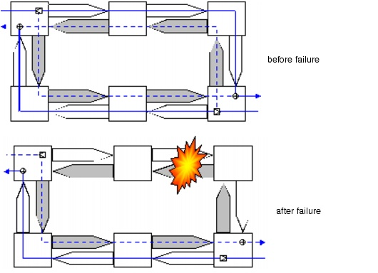
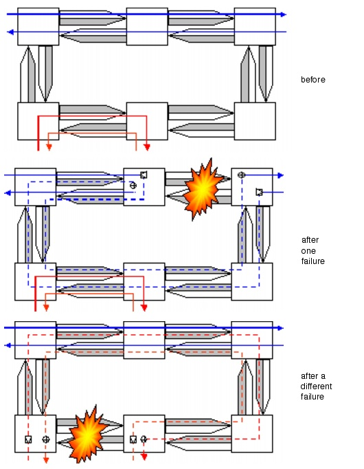

Concepts and Models > Protection Methods in Ring Networks > Bidirectional Line Switched Ring (BLSR)
Protection Methods in Ring Networks
SP Guru Transport Planner supports two protection methods in ring architectures:
Unidirectional Path Switched Ring (UPSR)
The UPSR consists of two corresponding rings (a working and a protection ring) that transfer data in opposite directions. This configuration ensures that each connection on the working ring can be protected along the reverse side on the protection ring. Because a protected bi-directional connection is thus routed on both sides of the ring, it uses up an entire capacity slot along the ring. This capacity cannot be shared by any other connection. The capacity requirements of the ring equal the total amount of traffic to be protected on the UPSR.
The ADMs within the ring nodes perform protection switching: the transmitting ADM duplicates the traffic, and single-ended switching occurs at the receiving ADM.
Figure 2-11 shows the concept of a UPSR before and after a link failure. The working fiber is drawn in white, the protection fiber appears in gray. Both working paths (solid lines) of the bidirectional demand are routed along different sides of the ring. The protection paths (dashed lines) are transmitted on the reverse side. One fiber has working traffic only; the reverse fiber has protection traffic only. Thus the link failure affects the working path in a single direction and causes a switchover to the protection path.
Figure 2-11 UPSR Before and After Link Failure

Bidirectional Line Switched Ring (BLSR)
A BLSR ensures that multiple connections can share the ring capacity. Both directions of a bidirectional connection can be routed on one side of the ring; as a result, multiple non-overlapping connections can reuse capacity on the other side. If multiple connections share the same ring capacity, a single failure affects one connection only (in both directions); this means that protection bandwidth can be shared among multiple connections.
A particular node failure might affect two connections that share the same ring capacity; these connections cannot recover from the node failure anyway, since both connections terminate in that node.
The shared protection ring can be implemented using either two or four fibers. The two-fiber implementation (2F-BLSR) uses two fiber rings that transfer data in opposite directions. Half of the capacity on each fiber is reserved for protection capacity. Thus working connections in one fiber can be protected using the protection capacity in the other fiber. Both directions of a bi-directional connection are routed in different fibers on the same side of the ring (see Figure 2-12-2F-BLSR Before and After Failures). The same ring protection capacity can be reused for another connection between different nodes. There is no dedicated protection connection; instead, different connections can access a pool of spare capacity. If a failure occurs at the multiplex section level, ADMs near the failure will use the ring's protection capacity to simultaneously loop back all the affected connections (see Figure 2-12). An Automatic Protection Switching (APS) protocol is required to coordinate the switching and the shared use of protection capacity (to prevent the loopback from getting initiated after a second failure).
In the four-fiber implementation (4F-BLSR), two fibers are used (one in each direction) for working traffic and two fibers are reserved for protection capacity. Therefore the 4F-BLSR has twice the capacity of a 2F-BLSR. The four-fiber arrangement combines both ring protection and span protection on the same architecture. Span protection implies that if a failure affects the multiplex section in the ring's working fiber only, the parallel protection fiber can be addressed by a simple span switch and no loopback occurs. This way, some types of multiple failures can be fully protected.
Figure 2-12 2F-BLSR Before and After Failures

| Home © 1987-2007 OPNET Technologies, Inc. All Rights Reserved. This software may be covered by one or more U.S. Patents. See complete patent notice in the Legal Notices section. OPNET Support Center |